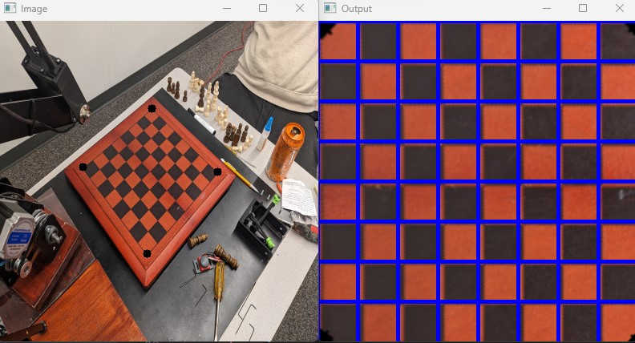
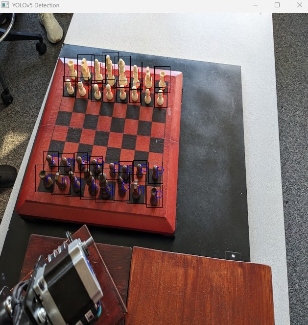
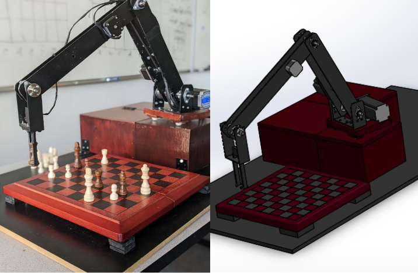

John Kreuser
Electrical Engineer & Robotics Enthusiast

Electrical Engineer & Robotics Enthusiast
I am an electrical engineer with a passion for robotics and AI. Currently, I work in power and process engineering at a global engineering consultant firm. My journey into the world of robotics began with my college capstone project, where I built an autonomous chess-playing robot.
In my college capstone project, I developed two significant components:
I designed and implemented a sophisticated computer vision system to detect chess pieces on a chess board. This involved the development of a custom data set and the training of multiple object detection neural networks through iterative refinement. Additionally, I leveraged OpenCV, a powerful computer vision library, to identify the chessboard and precisely locate the pieces in 3D space. Remarkably, the entire software solution operated seamlessly from a single input source, a camera phone.
 I designed and constructed a 4-degree-of-freedom mechanical arm, leveraging stepper motors and microcontrollers to control a specialized grabber mechanism. This intricate robotic arm was built entirely from the ground up, showcasing my engineering prowess and innovation. The grabber system was engineered to delicately pick up chess pieces with precision and finesse, demonstrating the culmination of my expertise in mechanical design and control systems.
If you'd like to get in touch with me or discuss potential collaborations, please feel free to reach out: